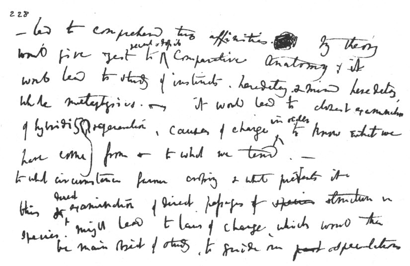
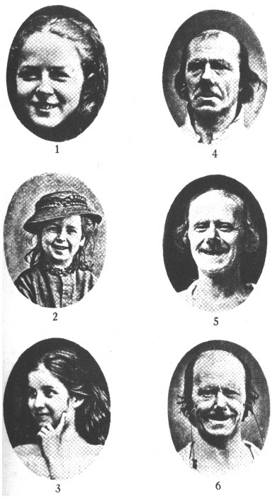

第8章
人类的特殊表情——快乐、精神奋发、爱情、温情、崇拜
·Joy High Spirits，Love Tender Feelings，Devotion·
巴尔特莱特先生替我记述了两只黑猩猩在初次被携带到一处时候的举动；这两只黑猩猩的年纪要比那些通常被运到本国来的黑猩猩大些。当时它们就相对坐下，用它们的伸出得很厉害的双唇彼此接触；于是有一只黑猩猩就伸手搭放在另一只的肩头上。此后，它们就彼此用双臂怀抱起来。再后，它们站立起来，各用一只手臂钩搭在对方的肩头上，举起头部，张开嘴巴，并且欣喜得尖叫起来。

1837年达尔文日记中的一页。
笑是快乐的最初表情——可笑的观念——发笑时候的面部动作——发出的声音的性质——大笑时候的出泪——大笑到平和的微笑的阶段——精神奋发——爱情的表达——温情——崇拜
快乐在达到强烈程度的时候，就引起各种不同的无目的的动作来：舞蹈、拍掌、踏步等；同时也引起大笑来。大概笑只是快乐或者幸福的最初的表情。我们可以从一群在游戏的小孩方面清楚地看到这一点；这时候他们几乎连续不断地在发笑。至于那些已经过了童年时代的青年人，那么他们在精神奋发的时候，也时常会发出很多无意义的笑来。荷马（Homer）曾经描写天神们的笑：“在他们每天的宴会以后，他们的天国的快乐就溢流开来”。一个人在街道上遇到老朋友的时候，就好像他在感到任何微小的愉快（例如嗅闻到一种愉快的香气）时候一样，发生微笑；而微笑，正像我们后面可以知道的，就逐步进展到发声的笑。 (1) 拉乌拉·勃烈奇孟（Laura Bridgman），由于她是瞎子兼聋子，不能够用模仿的办法来获得任何的表情；可是，当有人用姿态语（gesture-language）来把一个爱友的来信译解给她的时候，她就“发笑并且鼓掌，两颊泛红”。还有几次，有人看到她快乐得踏起脚步来。 (2)
白痴和低能的人，也可以作为证据，来证明声笑或者微笑最初表现出单单幸福或者快乐来。克拉伊顿，勃郎博士在这里，也像在其他很多地方一样，由于把他的丰富的经验的成果供给我而使我非常感激；他告诉我说，在白痴方面，声笑是他们的一切表情当中的最普遍而且最经常出现的表情。很多白痴有恶劣脾气，容易发怒，躁急不安，处在苦痛的精神状态里，或者感觉完全迟钝；这些白痴就从来不发笑。还有一些白痴则经常作毫无意义的声笑。例如，有一个不会说话的白痴男孩，用做手势的方法向勃郎博士诉说道，精神病院里的另一个男孩打伤了他的一只眼睛；在诉说的时候，他同时发出“一阵阵笑声，而且他的脸上布满了微笑”。还有一群白痴，他们经常快乐和心情温和，并且总是发笑和微笑。 (3) 他们的面容时常显露出一种呆滞的微笑；每次在把食物放置到他们的面前的时候，或者在他们受到爱抚、看到鲜艳的颜色或者听到音乐的时候，他们的快乐程度就增加起来，同时他们作着露齿微笑，咯咯笑或者吃吃痴笑。在他们当中，有些白痴在散步时候，或者在尝试作任何肌肉的努力时候，就要比平时发出更多的笑来。据勃郎博士所说，大多数这些白痴，都不能够和任何明确的观念联合起来：他们单单感觉到愉快，并且就用声笑或者微笑来表达出它来。在智能比较高一些的低能的人方面，大概他们的最普通的声笑原因是个人的虚荣（自我满足），其次则是一种由于自己行为得到表扬而产生的愉快。
在成年人方面，他们的笑是被那些显著地和童年时代所能满足的原因不同的原因所激起的；可是，这个说法很难适用到微笑方面去。在这方面，声笑就和哭泣相似；成年人的哭泣差不多只是由于精神痛苦而发生，但儿童的哭泣则是由于身体上的疼痛或者任何的受苦，还有由于恐惧或者大怒，而被激发起来的。已经有人写了很多关于成年人的声笑的原因方面的很有趣的研讨著作。这个问题是极其复杂的。大概声笑最普通的原因，就是某种不合适的或者不可解释的事情，而这种事情会激发起那个应该具有幸福的心境的笑者感到惊奇和某种优越感来。 (4) 当时的周围情况应该不具有重大的作用：一个穷人在突然听到有人把一大笔财产遗赠给他的时候，就绝不会作声笑或者微笑。如果有人受到愉快感觉的强烈兴奋，还有如果有任何微小的偶然事件或者偶发的思想出现，那么正像赫伯特·斯宾塞先生所说， (5) “大量没有被容许把自身耗用到产生一种等量的新生的思想和情绪方面去的神经力量，就突然停止了流动。”……“这份过剩的神经力量必须使自己朝着另外一个方向排除出去，所以结果就发生了一种从运动神经而达到各类肌肉的急流，使肌肉发生半痉挛的动作，就是我们所称做的声笑”。有一个通信者，在最近巴黎被包围的时候作了一次关于这方面的观察，就是：在德国兵由于经历极度危险而受到强烈兴奋以后，他们就特别容易由于极小的开玩笑而爆发出大笑来。还有，在幼小的儿童正将开始哭叫的时候，如果出现一件意外的事件，那么有时也就会突然把他们的哭叫转变成为发笑；显然这种笑也同哭叫一样，可以用来把他们的过多的神经力量消耗去。 (6)
有时据说，可笑的思想会搔动想象力；这种所谓精神上的发痒，和身体上的发痒有着奇妙的相似。大家都知道，在儿童被搔痒的时候，他们就发出多么难以节制的笑声来，他们整个身体发生多么大的震动。我们已经知道，类人猿在被搔痒的时候，特别是在它们的腋窝处被搔痒的时候，也发出一种反复的声音来，这种声音就相当于我们的声笑。我曾经用一张纸片去触动我的一个初生只有7天的婴孩的脚踵，他的脚就突然缩开，而脚趾也因此拳曲起来，正像年纪较大的儿童在遇到这种情形时候所发生的动作。这些动作，也和被搔痒而发笑的情形相同，显然都是反射动作；这也是被细小的平滑肌肉纤维所表现出来的；这些肌肉纤维是用来竖起身体上的各根分离的毛发的，当时就在被搔痒的表面附近发生收缩。 (7) 可是，由于可笑的观念而发生的声笑，虽然是不随意的，但是也不能被称做是一种严格的反射动作。在这种情形里，还有在被搔痒而引起的声笑的情形里，笑者的精神应当是处在愉快的状态里；一个幼年的儿童如果被陌生人搔痒，那么反而会由于恐惧而尖叫起来。搔触应当轻微，而那种使人可笑的观念或者事件则应当是并不严重的；这样才可以使人发笑。身体上最容易被搔痒的部分，就是那些通常不大接触到的部位，例如腋窝处或者脚趾之间；或者是那些通常要以广大表面来作接触的部分，例如脚底；可是，我们坐下用的表面（臀部）却是这个规则的一个显著的例外情形。根据格拉希奥莱的意见， (8) 有些神经对于搔痒的感应方面，要比其他的神经更加敏感得多。儿童很难搔痒自己，或者是使自己发痒的程度要比别人搔痒他的程度低得多；大概搔触的精确部位不应该使被搔者事先知道，才能达到效果；精神上的搔痒情形也是这样，某种意外发生的事情，一种新奇的或者不合适的观念，而能够把通常的思想线索打断的，显然就会成为可笑感觉当中的一个重要成分。 (9)
笑声是由于一种深吸气而发生的；在进行这种深吸气的时候，紧接着发生胸部和特别是横膈膜的短促而断续的痉挛收缩。 (10) 因此，我们就听到“双手捧腹的大笑”。由于身体震动，笑者就点起头来。下颚时常上下颤动，正像几种狒狒在非常愉快时候所发生的情形一样。
在发笑的时候，嘴多少被宽阔地张开；嘴角向后牵伸得很厉害，同时也略微向上牵伸；上唇也略向上升。在适度的声笑时候，特别是在满脸的微笑的时候，可以最清楚地看到嘴角向后牵伸的情形来；后面这个形容微笑的词［满脸的，broad］表明出嘴怎样被宽张开来。在照相图版III的图1—3里，摄制了不同程度的适度的声笑和微笑的照片。那个戴草帽的小女孩的照片，是由华里奇（Wallich）博士所拍摄的，她的表情是真实的；其余两张照片则是由烈治朗德尔（Rejlander）先生所摄的。杜庆博士多次坚持说， (11) 在发生快乐情绪的时候，只有大颧肌（great zygomatic muscles）专门对嘴起着作用；这种肌肉用来牵动嘴角向后和向上；可是，如果根据上颚牙齿时常在声笑和满脸微笑时候显露出来的情形，还有根据我自己的感觉，来作判断的话，那么我就毫不怀疑地认为，有些与上唇相连的肌肉也同时在起有适度的作用。同时，上下眼轮匝肌也多少在作着收缩动作；正像前面关于哭泣的一章（第六章）里所说明的，在眼轮匝肌（特别是下眼轮匝肌）和几种与上唇相连的肌肉之间，具有极其密切的联系。亨列在谈到这个问题时候指出说， (12) 一个人在紧闭住一只眼睛的时候，就不可避免地要把这只眼睛同侧的嘴角向后退缩；相反的，如果任何人用手指按住下眼睑，接着就尽量设法把自己的上颚的门牙显露出来，那么他就会感觉到，因为上唇被强烈向上提起，所以下眼睑的肌肉就收缩起来了。在亨列的木刻图画里，就是在本书的图2里，可以看到，颊肌（musculus malaris ，H）和上唇相连，它几乎构成了下眼睑匝肌的主要部分。
杜庆博士曾经提供出一个正处在平静状态下的老年人的大照片（本书的照相图版III，图4，是缩小复制的）；还有一张照片，表明出这个老年人正在作自然的微笑（图5）。每个看到这第二张照片的人，都立刻会认出他的面容确实是十分自然的。杜庆还提供出另外一张同样的老年人的照片来（图6），作为一个表明不自然的、假装的微笑的例子；由于大颧肌被电流通过，因此他的嘴角就强烈地向后退缩。这种表情显然是不自然的，因为我曾经把这张照片给24个人看过，而在这些人当中，只有3个人完全不能够说明这是什么表情，而其余的人虽然认出这种表情具有微笑的性质，但是回答的用语则不相同，例如以为这是“一种恶意的戏嬉”，“试图发笑”，“露齿的笑”，“半吃惊的笑”等。杜庆博士以为，这种表情的虚伪，完全在于下眼睑的眼轮匝肌并没有充分收缩，因为他公正地断定下眼轮匝肌的收缩在快乐的表情里具有重大意义。不必怀疑，在这种见解里含有很多真实情形，但是我以为它还不能算是完全真实的。正像我们已经知道的，在下眼轮匝肌收缩的时候，也要同时发生上唇向上提起的情形。要是在这图6的照片里，上唇在受到这种作用时候略微上升，那么它的弯曲程度就会比较柔和，鼻唇沟也将略微发生变化，因此据我看来，整个表情就会显得更加自然，而对于下眼睑的比较强烈的收缩所引起的更加显著的效果并无关系。不但这样，在图6的照片里，皱眉肌也收缩得太过分，引起了皱眉；除了在强烈表现的声笑和狂笑时候以外，这种肌肉在快乐影响之下绝不会作出这样的收缩动作来。

照相图版 III
因为嘴角由于大颧肌收缩而向后和向上牵伸，还有因为上唇的升起，所以双颊也就被向上提起。因此，在双眼的下面形成皱纹；老年人的皱纹则位于双眼的外端；这些皱纹就是声笑和微笑的极其明显的特征。在平和的微笑增强而成为强烈的微笑或者声笑的时候，每个人如果去注意到自己的感觉，并且用镜子照看自己的面部，那么每个人都可以感觉到和看到，当上唇被提升起来和下眼轮匝肌收缩的时候，下眼睑上面的和眼睛下面的皱纹也变得更加显著或者数目增加起来。同时，据我多次所观察到的，眉毛也略微下降；这种现象表明出，上眼轮匝肌也像下眼轮匝肌一样，至少有几分收缩，不过单单从我们的感觉方面说来，这种收缩情形还是觉察不到的。如果我们来把这个老年人在通常的平静状态时候的面容的照片（图4），去和他在自然的微笑时候的面容的照片（图5）作一次比较，那么就可以看出，第二张照片里的眉毛略微低垂。我认为，这是因为上眼轮匝肌由于长期联合的习惯而被迫去和下眼轮匝肌一起，作出相当程度的行动来；而下眼轮匝肌本身，则由于和上唇的提升有联系而收缩起来。
勃郎博士告诉我一个关于患进行性麻痹（general paralysis of the insane）的精神病人的奇异事实；这就可以证明大颧肌在愉快情绪下发生收缩的倾向。 (13) 他写道：“在患这种病症的时候，差不多经常具有乐观主义，它表现在对财产、地位、伟大的幻想方面，也表现在不正常的欣喜、仁爱和浪费方面，而这种病症的最早期的身体上的症状则是嘴角和双眼的外角发生颤抖。这是一种公认的事实。下眼睑肌和大颧肌的经常性震颤激动，就是早期进行性麻痹的症状。面部显然现出一种愉快而仁爱的表情来。随着病症的进展，其他肌肉也受到侵害，但是一直到病人完全痴呆为止，他的主要表情总是微弱的仁爱的表情”。
因为在声笑和满脸微笑时候，两颊和上唇被强烈提升起来，所以鼻子就显得缩短起来，鼻梁上的皮肤起有细小的横皱纹，而在它的两旁则出现斜纵皱纹。通常露出上门齿来。形成了显著的鼻唇沟；每条鼻唇沟从鼻翼边连通到嘴角处；老年人的鼻唇沟时常成双重皱襞。
明亮而且闪闪发光的眼睛，也像嘴角和上唇后缩而因此连带出现皱纹的情形一样，是愉快或者喜悦的精神状态的特征。甚至是那些已经退化到绝不会学习说话的小头症白痴的眼睛，在他们愉快的时候，也会略微发亮。 (14) 在发出极度的声笑时候，眼睛由于眼泪分泌过多而难以发光；可是，泪腺在适度的声笑或者微笑时候渗出的湿润的水分，反而可以帮助眼睛获得光辉；不过这种分泌情形一定是属于完全次要的地位，因为在悲哀的时候，眼睛虽然也时常变得湿润，但是却反而显得黯淡无神。眼睛的明亮程度大概主要是依据它们的紧张程度来决定的， (15) 而这种紧张程度则是由于眼轮匝肌的收缩和上提的双颊的压力而发生。可是，根据皮德利特博士这一位比其他任何著者更加充分地探讨过这个问题的专家所说， (16) 这种紧张程度的起源，显著地是在于：愉快的兴奋引起血液循环加速，因此使眼球里面充满血液和其他液体而紧张起来。他讲述到一个具有迅速的血液循环的患痨瘵的病人的眼睛外貌和一个几乎全身液体都已排除完尽的患霍乱的病人的眼睛外貌的相反性质。任何使血液循环减慢的原因，都会引起眼睛黯淡无光。我记得，有一次曾经看到一个男人由于在极炎热的白天作了长久的艰苦的紧张劳动，而完全疲乏无力；当时有一个旁观者就把他的眼睛比拟做煮熟的鳕鱼眼睛。
现在回头来考察声笑时候所发生的声音。我们可以模糊地理解到，有几种声音的发出怎样会自然地和愉快的精神状态联合起来；这是因为动物界的大部分动物所发出的口声或者其他影响，都是用来作为异性间彼此呼唤或者诱惑的手段。此外，这些口声和音响，也用来作为双亲和子女之间和同一社会集团的亲近者们之间的互相联欢的手段。可是，我们还不能够知道，为什么人类在愉快时候所发出的声音，具有声笑所特有的反复特性。虽然这样，我们可以知道，这些声音自然是应当尽可能和悲痛时候的尖叫或者哭喊不相同；还有因为在发出尖叫或者哭喊的时候，呼气是延长而且连续的，同时吸气是短促而且中断的，所以我们大概也就可以预料到愉快时候所发出的声音的情形，就是：呼气一定是短促而且中断的，同时吸气是延长的；实际情形的确是这样的。
还有一个也是完全不明的问题，就是：为什么在普通的声笑时候，嘴角会向后退缩，而上唇则会向上提升。嘴同时也不应当张开到极大的部位，因为如果在过度大笑发生时候把嘴大张开来，那么任何的声音就难以发出来了，或者是它的音调就会发生变化，而且听上去好像是从喉咙的深处发出来似的。同时，呼吸所使用的肌肉，甚至是四肢的肌肉，也开始迅速震动起来。下颚也往往发生这种动作，大概因此也可以去阻止嘴大张开来。可是，因为要把声音充分向外吐出，所以嘴的孔口也必须宽大；因此，大概嘴角后缩和上唇提升，也就为了要达到这个目的。虽然我们还很难去说明嘴在声笑时候所采取的这种使双眼下面形成皱纹的形状，也不可能去说明这种特殊的反复的笑声和下颚的颤动，但是我们却可以断定说，所有这些现象的结果，都是由于某种共同的原因而发生，因为在各种不同的猿方面，这些动作也都是它们的愉快的精神状态的特征性的表情动作。
我们可以探查出从激烈的声笑（大笑）到适度的声笑、到满脸微笑、到平和的微笑并且到单单高兴的表情这一系列逐步的阶段。在过度的声笑时候，全身往往要向后仰倒，并且震动，或者几乎痉挛；呼吸遭到显著破坏；头部和面部充满过多的血液，同时静脉管扩大；还有眼轮匝肌为了保护眼睛而痉挛地收缩起来。眼泪自由地流出来。因此，正像前面所说，很难指认出一个人在过度的声笑发作以后和痛哭的号叫以后两种泪渍脸的任何差异来。 (17) 歇斯底里神经病患者轮流作着狂乱的哭喊和大笑，还有年幼的儿童有时会突然从一种精神状态转变成为另一种精神状态——这些情形大概是因为这些大不相同的情绪所引起的痉挛动作极其相似，而发生出来的。斯文和（Swinhoe）先生告诉我说，他时常看到中国人在遭受到严重的悲哀时候，就爆发出一阵阵歇斯底里式的大笑来。
我急切想知道，在大多数的人种作着过度的声笑时候，是不是他们的眼泪都会自由地流出来，我从自己的通信者们那里听说，这种情形是时常发生的。从中国人方面观察到同样的流泪情形。马来半岛上的一种野蛮的马来人部落的妇女，有时在衷心地发笑的时候，就流出眼泪来，不过这种流泪情形是突然发生的。左婆罗洲的达雅克人（Dyaks）方面，一定经常发生这种情形，至少是在妇女方面是这样，因为我从印度公爵勃鲁克方面知道，达雅克人有一种流行的说法，就是说：“我们差不多笑得连眼泪也出来了”。澳大利亚的土人自由地表现出他们的情绪来；我的通信者叙述道，他们由于快乐而不停地跳跃和拍掌，还时常哈哈大笑。至少有四个观察者看到，在这些情况下，他们的眼睛都被泪水浸湿了；有一次，眼泪就从他们的面颊上滚流下来。维多利亚省的边远地方的传教士巴尔满（Bulmer）先生指出说：“当地的土人对可笑情形方面具有一种敏锐的感觉；他们具有精彩的模仿本领；在他们当中，如果有人能够模仿部落里的某一个当时不在一起的土人的行为特征，那么就可以很通常地听到，全部集居的土人都笑得翻倒在地上”。在欧洲人方面，很难有任何事情会有模仿他人行动那样容易激起声笑来的了；而在这些构成世界上的特殊人种之一的澳大利亚的未开化的人方面，竟也出现同样的事实，这真是使人感到更加有趣的。
在南非洲的两个卡弗尔人部落方面，特别是在妇女方面，当他们发笑的时候，在他们的眼睛里常常充满着泪水。酋长桑第里的兄弟盖卡就用下面一句话来回答我关于这个问题的询问：“是的，这是他们惯常发生的事情”。安德留·斯密斯爵士曾经看到一个霍顿托特族女人的涂粉的面部，在发了一阵大笑以后，就被泪水开成了沟纹。在北非洲的埃塞俄比亚人方面，眼泪也在同样的情况下被分泌出来。最后，在北美洲的一个显然是未开化的孤离的部落里，也曾经观察到同样的事实，不过主要是在妇女方面有这种情形；而在另一个部落里，只有在单独的一次情形里，才观察到这种情形。 (18)
正像前面所指出的，过度的声笑逐渐转变成为适度的声笑。在适度的声笑时候，眼睛周围的肌肉收缩得很轻微，而皱眉也极小，或者全不发生。在平和的声笑和满脸微笑之间，简直没有什么分别，只不过在微笑时候没有发出反复的声音来，而且在微笑开始的时候，时常可以听闻到一种单独的比较强烈的呼气，或者轻微的嘈声，也就是声笑的萌芽。在适度微笑的面部上，仍旧能够恰正从眉毛略微下降的状态方面，来探查出上眼轮匝肌的收缩情形。下眼轮匝肌和眼睑肌的收缩情形更加明显得多，这可以从下眼睑上的皱纹和它们下面的皮肤上的皱纹连同上唇略微向上提升的情形方面来得到证明。我们就来用极细微的阶段，使最广大的微笑转移到最平和的微笑方面去。在最平和的微笑时候，面容只发生极其轻微的变动，而且也变动得更加缓慢得多，而且嘴保持着闭紧的状态。鼻唇沟的弯曲程度也和前两种情形略有不同。因此，我们可以知道，在最剧烈的声笑和很轻微的微笑时候所显出的双方面容的动作之间，不能够作出一条明确的分界线来。 (19)
因此，可以把微笑称做声笑发展方面的第一阶段。可是，也可以提出一个不同的和更加近于真实的见解来，就是：这种由于愉快感觉而发出高大的反复声音来的习惯，起初引起嘴角和上唇退缩，并且引起眼轮匝肌收缩；于是同样这些肌肉由于联合和长期连续的习惯，每次当任何的原因使我们激发起一种感情来的时候，就起有轻微的作用，它的结果就是微笑；可是这种感情如果更加强烈，那么就会引起声笑。 (20)
我们是不是要把声笑看做是微笑的充分发展，或者更加近于真实的是，把平和的微笑看做是很多世代里坚强地固定下来的一种使我们在每次快乐时候就发笑的习惯的最后痕迹；我们可以从自己的婴孩方面探查出来。微笑逐渐转移到声笑的过程来。那些保育过幼年的婴孩的人，就清楚地知道，要去肯定这些婴孩的嘴边的某些动作是不是真正的表情动作，就是他们是不是真正在微笑，这是一件困难的事情。因此，我就去仔细观察了自己的婴孩们。我的一个婴孩在出生到45天的时候，而且又同时处在幸福的心绪里时候，就发出微笑来，就是：嘴角向后退缩，同时双眼发出明显的光辉来。第二天，我也观察到同样的情形；可是到第三天，这个小孩的身子不十分健好，因此就看不到微笑痕迹来；这使我认为，大概以前两天的微笑是真实的。在以后的8天和更后的一星期里，当他每次微笑的时候，他的双眼就显著地发亮起来，同时他的鼻子也开始起有横皱纹。在这种动作出现的时候，还发出一种轻微的哼声，就带有一些略为不同的性质并且好像在啜泣时候的情形一样，变得更加分散或者断续；这的确是初期的声笑。当时我以为，音调的变化是和嘴在微笑变得更大的时候也向两侧伸长的情形有关的。
在我的第二个婴孩方面，大约也在同样的年龄，就是在出生到45天的时候，观察到他的初次真正的微笑；而在第三个婴孩方面，则初次微笑的年龄要略微早些。第二个婴孩在到65天时候所发出的微笑，要比第一个婴孩在同年龄时候所发出的微笑更加广大和显著；甚至在这种幼小的年龄也发出了极像声笑的嘈声来。我们可以认为，婴孩对声笑习惯的逐渐获得的情形，也有几分和哭泣习惯的逐渐获得相似。因为在身体的普通动作方面，例如在走路方面，需要训练，所以在声笑和哭泣方面大概也需要训练。另一方面，尖叫的本领因为对婴孩有用，所以在出生以后的最早几天里就已经良好地发展起来了。
精神奋发，高兴——一个精神奋发的人即使不发出真正的微笑来，也通常会显露出一种要把自己的嘴角退缩的倾向来。由于愉快的激奋，血液循环就变得更加迅速起来；双眼发亮，面部颜色变得更加鲜艳。脑子因为受到血液加强流动的刺激，就对精神活动发生影响；在头脑里更加迅速地闪现出活跃的观念来，而恋情也因此热烈起来了。我听说，有一个年纪略小于4足岁的小孩，在听到人家问他“高兴”是什么意义的时候，就回答道：“这就是说说笑笑和接吻”。要再提出一个比他的说法更加确实和更加实际的定义来，那恐怕是很难的了。一个处在这种精神状态的人，就使自己身体保持挺直，头部抬起，而且双眼张开。同时面容并不下沉，而眉毛也不皱缩。相反的，根据莫罗的观察 (21) ，额肌（frontal muscle）有着一种略微收缩的倾向；因此前额就显得平滑而凸出，所有皱纹的痕迹都随着消除，眉毛略微弓起，而眼睑则上升。因此，拉丁语exporrigere frontem （舒展额上的皱纹）的意义就是高兴或者快活。一个高兴的人的全部表情，恰正和一个受到痛苦的人的表情完全对立。根据贝尔爵士所说，“在一切使人高兴的情绪下，眉毛、眼睑、鼻孔和嘴角都向上升起。可是，在低抑的激情下，则情形就相反”。在后者的影响下，双眉紧锁，眼睑、面颊、嘴和整个头部下垂；眼睛变得黯淡无光，面色苍白，呼吸也缓慢起来。在快乐的时候，面部加宽；而在悲哀时候，则面部就伸长。我不打算来说明，对立原理在这里究竟有没有对产生这些对立的表情方面起有作用，而使上面已经列举而且相当明白的直接原因得到进展。
一切人种的高兴的表情，显然是相同的，并且也容易被辨认出来。我的那些位在新旧两世界各地的通信者们，对于我所提出的这方面的询问都作了肯定的答复；他们对于印度人、马来人和新西兰人方面还提供了一些详细情况。澳大利亚人的眼睛的发亮程度，使四个观察者感到吃惊；在印度人、新西兰人和婆罗洲的达雅克人方面，也观察到同样的事实。
未开化的人有时不仅用微笑来表明他们的满足，而且也用那些由于饮食的愉快而产生的姿态来表明它。例如，魏之武（Wedgwood）先生引用彼脱利克（Petherick）的话道， (22) 在他（彼脱利克）把自己的一串念珠取出给上尼罗河（Upper Nile）的黑人们看的时候，他们就搓擦起自己的腹部来；李黑哈特（Leichhardt）说道，澳大利亚人在望见自己的马和阉牛时候，特别是望见自己的猎袋鼠的狗时候，就作出咂唇和弹舌的声音来。格陵兰人“在愉快地肯定任何一件事情的时候，就吸进一口空气，同时发出一种特殊的声音来”； (23) 大概这是一种对咽下鲜美食物的动作的模仿。
声笑受到口轮匝肌的坚强收缩的抑制；这就阻止了大颧肌和其他肌肉把双唇向后和向上牵动。下唇有时也被牙齿所制动；这就使面部显出一种欺诈的表情来；例如，从瞎子兼聋子的拉乌拉·勃烈奇孟方面，就观察到这种表情。 (24) 有时大颧肌的位置发生变更；我曾经看到，一个青年妇女为了抑制微笑而使自己的口角降肌（depressores anguli oris ）发生强烈的动作；可是，由于他的眼睛出现光辉，这就无法使她的面容再具有忧愁的表情。
经常可以看到，声笑被强制地采用来隐藏或者伪装其他的精神状态，甚至是愤怒。我们时常看到，有些人为了隐藏他们的羞惭或者害羞而发笑。如果没有东西激发起微笑，或者没有东西阻止它自由出现，而有人紧缩起双唇，好像要防止尽可能的微笑似的，那么就会显现出一种不自然的、严肃的或者拘谨的表情来；可是在这里，不必再来谈到这一类复杂的表情。在嘲笑的情形里，一种真正的或者假装的微笑或者声笑，就时常和轻蔑所特有的表情混合在一起，而且这种情形可以转变成为愤怒的轻蔑或者侮慢。在这些情况下，声笑或者微笑的意义，就在于要向欺负者表示他只不过激起了别人的好笑罢了。
爱情，温情等——虽然爱的情绪（例如母亲对她的婴孩的爱情）是我们心头所能发生的最强烈的情绪之一，但是据说它很难具有任何固有的或者特有的表达方法；这一点也是可以明白的，因为爱情通常不引起任何特定的动作方式。不必怀疑，因为恋情是一种愉快的感觉，所以它通常就引起平和的微笑和使双眼有些发亮。通常我们感到一种想要去摸触所爱的人的强烈欲望；而爱情就靠了这种方法被表达出来，而且比靠了其他任何方法更加明显。 (25) 因此，我们就渴望要把自己所钟爱的人怀抱起来。大概我们应当把这种欲望是由于遗传的习性而发生，这种习性是和我们保育和看护小孩互相联合的，也是和爱人彼此抚爱互相联合的。
在比较低等的动物当中，我们也可以看到，同样和爱情联合并且由于互相接触而产生出愉快来的原理。狗和猫在挨擦自己的男主人和女主人的时候，明显地获得愉快；还有在受到男女主人的抚摸或者轻拍的时候也是这样。动物园的饲养员们向我肯定说，很多种类的猿都喜爱彼此互相挨擦，并且去挨擦它们所亲近的人和被这些人抚摸。巴尔特莱特先生替我记述了两只黑猩猩在初次被携带到一处时候的举动；这两只黑猩猩的年纪要比那些通常被运到本国来的黑猩猩大些。当时它们就相对坐下，用它们的伸出得很厉害的双唇彼此接触；于是有一只黑猩猩就伸手搭放在另一只的肩头上。此后，它们就彼此用双臂怀抱起来。再后，它们站立起来，各用一只手臂钩搭在对方的肩头上，举起头部，张开嘴巴，并且欣喜得尖叫起来。
我们欧洲人把接吻作为恋情的表征，已经成为普遍的习惯，因此也可以使人认为这是人类天生所具有的；可是，实际上并不是这样的。斯底耳（Steele）曾经说道：“自然界是接吻的创立人，而接吻是从初次求爱开始的”；这种说法是错误的。火地岛土人琴米·白登（Jemmy Button）告诉我说，在他的本乡土地上，大家都不知道接吻的意义。新西兰人、木赫的岛人、帕普安人（Papuans，新几内亚的土人） (26) 、澳大利亚人、非洲的索马利人（Somali）和爱斯基摩人 (27) 也同样地不知道这种习惯。可是，接吻是具有多么大的天生的或者自然的性质，因此它显然是依据那种和心爱的人密切接触而发生的愉快来决定的；在世界的各个不同的地区里，用其他的方式来代替接吻，就是：擦鼻子，例如新西兰人和拉伯兰人（Laplanders）；挨擦或者轻拍手臂、胸部或者腹部；或者是一个人用对方的手或脚来拍击自己的面部。大概一种作为恋情的表情的向对方的身体各部分吹气的动作，也可能是依据同样的原理而发生的 (28) 。
那些叫做温情（tender）的感情，很难加以分析；它们好像是和恋情、快乐、尤其是和同情复合而成的。这些感情本身具有愉快的性质，只除了在听到一个被虐待的人或者动物的喊声时候发生太深的怜悯或者引起恐怖的情形以外。从我们现在所感兴趣的观点看来，这些感情由于容易激起眼泪分泌而受人注意。有很多次，父亲和儿子在久别重逢的时候就流下泪来，尤其是在意外地相逢的时候就流下泪来。显然无疑，极度的快乐本身就具有一种对泪腺起作用的倾向；可是，在上面所举出的父子相逢这一类例子里，大概父子曾经有一种感到永不相逢的模糊不明的悲哀思想在心头闪现过；而悲哀就自然地引起眼泪分泌出来。因此，在俄底修斯（Ulysses） (29) 回国的时候：
……忒勒马科斯
站起身来，带着眼泪贴近在他的父亲的胸膛上。
郁积的悲哀笼罩着他们，因此就想大哭一场。
* * * * * *
他们就这样悲痛地号哭起来，无限伤心。
热泪横流，天日昏暗，
最后忒勒马科斯才想到寻话来问。
《奥德赛》，华斯莱（Worsley）的英译本，第16章，第27节
还有，当珀涅罗珀（Penelope）最后辨认出自己的丈夫来的时候：
于是，从她的眼睑上流下了滚滚的泪珠，
她站起身来扑向自己的丈夫，把双臂
抱住了他的脖子，而且在他额上
作了温柔的接吻，同时就开言道……
同上书，第23章，第27节
当我们鲜明地回忆到自己的以前的家乡，或者逝去已经很久的幸福的日子时候，眼泪就会很容易涌现在自己的眼眶里；可是在这里，又再会自然地出现那种过去的日子一去不返的想法。在这些情况下，可以说，我们在把自己的过去状况取来作对比，而对现在状况里的自己发生同情。对别人的悲痛经历发生同情，甚至对爱情小说里的一位本来没有和我们有恋情关系的女主角的假想的悲痛发生同情，也很容易激发出眼泪来。还有在对别人的幸福发生同情的时候，例如在阅读到精彩的故事里的一个经过千辛万苦才最后达到成功的爱人的幸福时候，也会使人流出眼泪来。
大概同情会构成一种独立的或者与众不同的情绪；它特别能够去刺激泪腺。不论我们发生同情或者接受同情，都同样良好地适合于这种见解。每个人一定都注意到，在我们对那些受到某种小伤的儿童发生怜悯的时候，他们就很容易发出一阵哭喊来。克拉伊顿·勃郎博士告诉我说，对于忧郁的精神病患者，即使讲一句亲切的话，也会时常使他们陷于难以抑制的哭泣。每次当我们为了一个朋友的悲哀而表示自己的怜悯时候，眼泪就会时常涌现在自己的眼眶里。通常用一种假定来说明同情的感情，就是：当我们看到或者听到别人的受苦时候，受苦的观念就在自己的心头被非常鲜明地呼唤出来，因此好像自己在亲身受苦一般。可是，很难认为这种说明是充分的，因为它并没有考虑到同情和恋情之间的密切关系。显然无疑，我们对于自己心爱的人的同情，要比对于一个没有关系的人的同情更加深切得多；而且前一种同情也要比后一种同情使我们得到更多的安慰。可是，的确我们也能够对于那些我们没有恋情的人发生同情。
前面一章里已经讨论到，为什么我们亲身所经历到的苦痛会激发起哭泣来。至于说到快乐方面，那么它的自然而且普遍的表情就是声笑；在一切人种当中，大笑都会比任何其他原因（除了悲痛以外）使人更加自由地分泌出眼泪来。在大快乐的时候，显然无疑地发生双眼满含泪水的情形，不过没有声笑；我以为，大概也可以根据悲哀时候分泌眼泪的同样原理以习惯和联合来说明这种情形，不过在这时候没有尖叫声发出。可是，有一种很可以使人注意的情形，就是：对于别人的悲痛的同情，要比自己亲身受到的痛苦，更加容易激发出眼泪来；实际情形的确是这样的。很多人对于自己的苦恼连一滴眼泪也流不出自己的眼睛来，可是对于心爱的朋友的苦恼却大流起眼泪来。还有更加值得使人注意的情形：就是：我们对于自己所钟爱的人们的幸福和好运的同情，也应当引起同样的结果来；可是，我们亲身所遇到的同样的幸福，却反而使自己的眼睛干燥无泪。可是，我们应当记住，那种对身体疼痛能够用很大力量去阻止自由流泪的长期不断的抑制习惯，却不能够在阻止同情别人的受苦或者幸福时候适度出泪方面发生作用。
我曾经在其他地方作过尝试， (30) 要去证明音乐具有一种惊人的能力，会以模糊不定的方式去唤起那些被远古时代的人类所感受到的强烈情绪；在这些远古时代里，很可能我们很早的祖先们就靠了口声的帮助来彼此求爱。因为有几种被我们感受到的情绪——悲哀、大快乐、爱情和同情——引起眼泪自由分泌，所以也用不到惊奇，当然音乐会引起我们的眼睛里充满起泪水来；尤其是在任何一种温情已经软化了我们的心时候，更加会发生这种情形。音乐时常会产生出另一种特殊的效果来。我们知道，每种强烈的感情、情绪或者兴奋——极度苦痛、大怒、恐怖或者热烈的爱情——所有这一切，都具有一种引起肌肉颤动的特定倾向；在很多人受到音乐的强烈感染时候，他们所发生的从背脊和四肢上部向下的颤动或者轻微发抖情形，大概对于上面所说的身体颤抖的关系，也像是音乐力量所引起的轻微出泪对于任何强烈的真正情绪所引起的哭泣的关系一样。
崇拜——因为崇拜虽然主要由尊敬所构成，而且时常和恐怖结合起来，但是也和恋情有几分关系，所以我们也可以在这里把这种精神状态的表情提出来，简单地谈谈。在过去和现在的几种教派里，把宗教和爱情奇怪地结合在一起；无论这个事实有多么的可悲，但是它甚至已经被大家所肯定，就是：神圣的爱情的接吻，却也和男人给予妇女吻或者妇女给予男人吻没有多大分别。 (31) 崇拜主要是用面部朝天仰起和眼球向上转动的状态来表明。贝尔爵士指出说，在将近睡眠、昏厥或者死去以前，瞳孔被牵动到上面和内侧去；他还认为，“当我们整个被崇拜的感情所笼罩着并且不再顾及到外部印象的时候，就有一种既不是学习到的也不是获得的动作来把双眼向上举起”；并且以为，这是根据那个和上面所说的情形里的同样原因而发生的。 (32) 我曾经听到唐得尔斯教授所说，在睡眠时候，眼球的确是向上翻转的。婴孩在吮吸母亲的乳房时候，就发生眼球向上翻转的动作，这时常使他们显出一种失神欣喜的蠢相来；在这里，可以清楚地看出，婴孩正为了要反对睡眠时候所自然地采取的眼球位置而作一番挣扎。可是，根据我从唐得尔斯教授那里听到的情形看来，贝尔爵士对这种事实所作的说明是不正确的；他把这种事实奠定在一个以为某些肌肉比其他肌肉更加能够受到意志的支配的假定上面。因为祈祷的时候，虽然眼球也时常向上翻转，但是精神还没有像接近于睡眠的无意识程度那样被很多地吸收到沉思里去，所以这种动作大概是沿传的动作，是一种普通信仰的结果；这种信仰就是：我们所祷告的神力的泉源——苍天——正高临在我们的头顶上。
我们可以认为，一种双手上举合掌的卑贱的跪拜姿态，是由于长期的习惯而造成的一种很适合于崇拜方面的姿态，因此好像也可以认为它是天生的；可是，在欧洲人以外的各种人种方面，我还没有获得关于这种说法正确的证明。我从一个精通古典的专家那里听到，在罗马史的古典时期里，双手在祈祷时候这样相合一起的情形大概还没有出现。亨士莱·魏之武先生显然提出了一个正确的说明， (33) 不过这种说明暗示出这种姿态是奴隶服从的姿态。他写道：“在祈祷者跪下，把双手举起和合掌的时候，他就表明出自己是一个俘虏，在用伸出双手请胜利者捆缚的姿态来表示自己完全服从。这就是拉丁文dare manus（给予双手）的形象表示，意义就是服从”。因此，在崇拜感情的影响下，眼球上转和双手合掌的动作都不可能是天生的，或者是真正表情动作；而且也未必可以预料到这种动作一定出现，因为这些要被我们现在归进到崇拜方面去的感情，究竟在过去时代的人类还处在未开化状态里的时候，有没有对他们的心情发生影响，一这还是一个很使人怀疑的问题。
————————————————————
(1) 赫伯特·斯宾塞：《科学论著集》（Essays Scientific ）等，1858年，第360页。
(2) 关于拉乌拉·勃烈奇孟的发音，李别尔（F. Lieber）的文章，载在《斯密生氏文稿录》（Smithsonian Contributions ），1851年，第2卷，第6页。
(3) 还可以参看马夏耳（Marshall）先生在《哲学学报》（Phil. Transact. ）里的文章，1864年，第526页。
(4) 培恩先生（《情绪和意志》，The Emotion and the Will ，1865年，第247页）对于可笑的情形作了详细而且有趣的讨论。前面所举出的关于天神的笑的引用文句，就是从他的这个著作里摘取来的。还可以参看孟德维耳（Mandevill）：《关于蜜蜂的寓言》（The Fable of the Bees ），第2卷，第168页。
(5) 赫伯特•斯宾塞：《笑的生理学》（The Physiology of Laughter ），论文集，第2集，1863年，第114页。
(6) ［旧金山（San Francisco）地方的兴顿（C. Hinton）先生（1873年6月15日的来信）叙述，他自己曾经在金门（Golden Gate）附近的悬崖上独自处在危险境地的时候，轮流发出求救的尖叫声和笑声来。］
(7) 李斯脱（J. Lister）的文章，载在《显微科学季刊》，1853年，第1卷，第266页。
(8) 格拉希奥莱：《人相学》，第186页。
(9) ［杜蒙特（L. Dumont，《感应性的科学理论》，Théorie Scientfique de la Sensibilité ，第二版，1877年，第202页）企图表明说，搔痒的感觉是由于接触的性质发生意外的变化而产生的；他还认为，正是这种意外情形构成了这种由于搔痒和可笑观念而发生的笑的一般原因。海克尔（Hecker，《笑的生理学和心理学》，Physiologie und Psychologie des Lachens ，1872年）把搔痒和可笑观念联系起来，作为笑的原因，但是采取了不同的观点来解释。］
(10) 贝尔爵士：（《表情的解剖学》，第147页）提出了一些关于横膈膜在声笑时候的动作方面的意见。
(11) 杜庆：《人相的机制》，册页本，说明文字VI。
(12) 亨列：《人体系统解剖学手册》，1858年，第1卷，第144页。参看本书前面的木刻图（就是图2，H） 。
(13) 还可以参看克拉伊顿·勃郎博士关于这方面的同样效果的记述，载在《精神科学杂志》（Journal of Mental Science ）1871年4月，第149页。
(14) 伏格特（C. Vogt）：《小头症的记述》（Mémoire sur Microcéphales ），1867年，第21页。
(15) 贝尔爵士：《表情的解剖学》，第133页。
(16) 皮德利特：《表情和人相学》，1867年，第63—67页。
(17) 雷诺耳兹（J. Reynolds）爵士指出说（《论说杂志》，Discourses 第12卷，第100页）：“可以使人很有趣味地观察到，同样的动作，只要加上极小的变动，就可以表达出相反的激情的极端情形来；这个事实是千真万确的”。他举出一个在巴克斯神祭时候狂欢纵酒的女人的狂喜和马利·马格大伦（Mary Magdalen，基督所赦罪的妇女）的悲哀来，作为例子。
(18) ［哈尔乔恩（B. F. Hartshorne）先生最确实有据地肯定说（《双周评论》，Fortnightly Review ，1876年3月，第410页），锡兰的惠达族人（Weddas）从来不发笑。对他们用尽了一切可能使人发笑的计策，都没有效验。在询问他们以前有没有发笑过的时候，他们就回答说：“没有，到底有什么事情是可以使人发笑的呢？”］
(19) 皮德利特博士已经获得了同样的结论；《表情和人相学》，第99页。
(20) ［根据著者的原稿本的附注，可以认为，他的最后意见大概是：不能完全把眼轮匝肌在平和的声笑和微笑时候的收缩情形解释成“大笑时候的收缩的痕迹，因为（在微笑时候）这就不可以去解释那种主要是下眼轮匝肌的收缩了”。］
(21) 拉伐脱尔（G. Lavater）编著：《人相学文集》，1820年出版，第4卷，第224页。还有对于下面的一段引用文字，可以参看贝尔爵士所著的《表情的解剖学》，第172页。
(22) 魏之武：《英语语源学字典》（Dictionary of English Etymology ），第二版，1872年，绪论，第44页。
(23) 泰洛尔所引用的克朗兹（Crantz）的句子。泰洛尔：《原始文化》（Primitive Culture ），1871年，第1卷，第169页。
(24) 李别尔的文章，载在《斯密生氏文稿录》，1851年，第2卷，第7页。
(25) 培恩先生指出说（《精神和道德的科学》，Mental and Moral Science ，1868年，第239页）：“温情是一种受到各种不同的刺激而发生的愉快情绪；这种情绪的企图就在于要吸引人们去互相拥抱”。
(26) ［孟特加查（《人相学》，第198页）引用华特·吉耳（Wyatt Gill）的话；吉耳曾经在帕普安人当中看到过接吻。］
(27) 柳波克（J. Lubbock）爵士：《史前时期》（Prehistoric Times ），第二版，1869年，第552页。他在这里对这些说法提供了十分可靠的证明。我引用的斯底耳的话，就是从这本书里摘取来的。［文乌德·利德先生（1872年11月5日的来信）说道，在西非洲全部地区里，大家都不知道接吻；“大概这是地球上最大的无接吻情形的地区了”。］
(28) 参看泰洛尔所提出的详细说明，有引证的事实。泰洛尔：《人类早期史研究》（Researches into the Early of Mankind ），第二版，1870年，第51页。
(29) 俄底修斯是荷马（Homer）的中诗《奥德赛》（Odyssey）里的古代希腊大英雄。忒勒马科斯（Telemachus）是他的儿子；珀湼罗珀（Penelope）是他的妻子。——译者注
(30) 《人类起源》，第二版，第二卷，第364页。［第19章，关于声音和音乐能力的一节。——译者注］
(31) 毛兹莱博士在他所著的《肉体和精神》（Body and Mind ，1870年，第85页）里讨论到这种情形。
(32) 贝尔：《表情的解剖学》，第103页；还可以参看哲学学报（Philosophical Transactions ），1823年，第182页。
(33) 魏之武：《语言的起源》（The Origin of Language ），1866年，第146页。泰洛尔先生（《早期人类史》，第二版，1870年，第48页）提出了双手在祈祷时候的位置方面的更加复杂的起源。